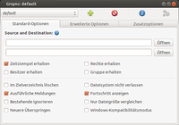
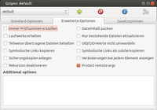

rsync
Dieser Artikel wurde für die folgenden Ubuntu-Versionen getestet:
Dieser Artikel ist größtenteils für alle Ubuntu-Versionen gültig.
Zum Verständnis dieses Artikels sind folgende Seiten hilfreich:
Installation von Programmen, optional
Bearbeiten von Paketquellen, optional
 rsync ist ein Programm, um Dateien zwischen lokalen oder über das Netzwerk erreichbaren Pfaden abzugleichen. Dabei werden zunächst die Größe und die Änderungszeit der Dateien in Quelle und Ziel verglichen ("Quick Check"-Algorithmus), so dass nur die Dateien behandelt werden müssen, bei denen es Änderungen gegeben hat. Sind Quelle und Ziel lokale Pfade, werden die betroffenen Dateien normal kopiert. Wenn auf Quelle oder Ziel aber per SSH oder über einen speziellen rsync-daemon zugegriffen wird, nutzt rsync zusätzlich noch einen speziellen Delta-Transfer-Algorithmus, so dass nur die geänderten Teile der Dateien über das Netzwerk transportiert werden müssen.
rsync ist ein Programm, um Dateien zwischen lokalen oder über das Netzwerk erreichbaren Pfaden abzugleichen. Dabei werden zunächst die Größe und die Änderungszeit der Dateien in Quelle und Ziel verglichen ("Quick Check"-Algorithmus), so dass nur die Dateien behandelt werden müssen, bei denen es Änderungen gegeben hat. Sind Quelle und Ziel lokale Pfade, werden die betroffenen Dateien normal kopiert. Wenn auf Quelle oder Ziel aber per SSH oder über einen speziellen rsync-daemon zugegriffen wird, nutzt rsync zusätzlich noch einen speziellen Delta-Transfer-Algorithmus, so dass nur die geänderten Teile der Dateien über das Netzwerk transportiert werden müssen.
Aufgrund dieser Eigenschaften ist rsync sehr gut geeignet, um Sicherungen durchzuführen. Für regelmäßige automatisierte Sicherungen eignen sich Programme wie rsnapshot oder Back In Time, die ihrerseits wieder rsync verwenden. Wenn man allerdings Verzeichnisse zwischen zwei Systemen wie Laptop und Desktop-Rechner synchronisieren möchte, sind Programme wie Unison besser geeignet.
Installation¶
rsync ist im gleichnamigen Paket enthalten, welches standardmäßig unter Ubuntu installiert ist. Sollte das Programm fehlen, lässt es sich wie folgt installieren[1]:
rsync
 mit apturl
mit apturl
Paketliste zum Kopieren:
sudo apt-get install rsync
sudo aptitude install rsync
Anwendung¶
Die Syntax des Befehls im Terminal [3] sieht folgendermaßen aus:
rsync [OPTIONEN] QUELLE(N) ZIEL
Anstelle des Platzhalters QUELLE gibt man den Ort an aus dem gelesen werden soll und das ZIEL bestimmt den Ort in den rsync zu kopieren hat. Gibt man nur einen Parameter an, so wird dieser als Ziel interpretiert und es gilt das aktuelle Verzeichnis als Quelle.
Optionen¶
Es ist empfehlenswert, die Option -a immer zu benutzen, um alle Rechte und Eigentümer der Quelldatei auf dem Zielmedium zu übernehmen:
-afasst folgende Optionen zusammen:-rkopiert Unterverzeichnisse-lkopiert symbolische Links-pbehält Rechte der Quelldatei bei-tbehält Zeiten der Quelldatei bei,-gbehält Gruppenrechte der Quelldatei bei-obehält Besitzrechte der Quelldatei bei (nur root)-Dbehält Gerätedateien der Quelldatei bei (nur root)
| Weitere Optionen | |
| Option | Wirkung |
-u | überspringt Dateien, die im Ziel neuer sind als in der Quelle |
-v | zeigt während des Synchronisierens alle ausgeführten Schritte an |
-x | berücksichtigt nur Objekte, die sich im gleichen Dateisystem befinden |
-P | aktiviert folgende Optionen: --progress Fortschrittsanzeige beim Transfer anzeigen --partial Fortsetzung des Transfers bei Abbruch |
-n | simuliert nur was passieren würde ("dry run") |
--bwlimit | z.B. --bwlimit=30 limitiert die Bandbreite, die genutzt werden soll (Hilfreich, da rsync sonst die komplett verfügbare Bandbreite in Anspruch nimmt und sonstige Anwendungen damit blockiert) |
-z | aktiviert die Komprimierung für die Datenübertragung (diese Option ist sinnvoll, wenn zwischen Quelle und Ziel eine langsame Verbindung besteht) |
-e | wählt die remote shell aus, die meisten werden SSH nutzen. Also -e ssh |
-E | behält die Ausführbarkeit von Dateien bei |
--exclude=Muster | schließt ein bestimmtes Muster von der Sicherung aus |
--exclude=ORDNER1 --exclude=ORDNER2 | schließt ORDNER1 und ORDNER2 von der Sicherung aus |
--delete | vergleicht Quellverzeichnisse und Zielverzeichnisse und sorgt dafür, dass Dateien, die im Quellverzeichnis nicht (mehr) vorhanden sind, im Zielverzeichnis gelöscht werden. Dies kann dazu führen, dass man ungewollt Dateien löscht, die man aber noch in der Sicherung behalten möchte. |
-b | sorgt dafür, dass durch die Option --delete gelöschte sowie alle veränderten Objekte gesichert werden (siehe dazu folgende Option --backup-dir=) |
--backup-dir=Verzeichnis | gibt ein Verzeichnis für die gelöschten und geänderten Objekte an, siehe Option -b |
-c | aktiviert einen Dateivergleich basierend auf Checksumme und nicht auf Größe und Timestamp. Die eigentlich Checksummenbildung dauert deutlich länger als der Vergleich Größe und Timestamp; andererseits werden überflüssige Kopiervorgänge (z.B. bei nur geändertem Timestamp) vermieden. |
--iconv | sorgt für eine Konvertierung der Dateinamen zwischen Systemen mit verschiedenen Codepages. Dieser Parameter kann erforderlich werden, wenn Dateien mit z.B. Umlauten im Namen übertragen werden. |
-h, --human-readable | verwandelt Zahlen in den log Dateien und auf stdout in ein besser für Menschen lesbares Format. Große Zahlen werden zu K (kilobytes), M (megabytes), oder G (gigabytes). Wenn diese Option angegeben wird ist K (1000), M (1000*1000), und G (1000*1000*1000). Wenn diese Option doppelt angegeben ist (-hh) wird mit 1024 anstelle von 1000 gerechnet. |
-H | Hardlinks werden berücksichtigt |
--stats | zeigt einen ausführlicheren Report am Ende einer Übertragung an. |
--size-only | sorgt dafür, dass Dateien mit gleicher Dateigröße übersprungen werden, unabhängig davon, ob sie sich in anderen Eigenschaften unterscheiden. Hilfreich bei Sicherungen auf Datenträger mit den Dateisystemen FAT oder NTFS, welche die unter Linux für die Verwaltung der Besitz- und Zugriffsrechte verwendete UNIX-FACL nicht unterstützen (weitere Einschränkungen). |
--progress | zeigt den Fortschritt des Kopiervorganges an. |
Experten-Info:
Für weitere Optionen und ausführlichere Erklärungen die Manpage oder Hilfe mit rsync -h aufrufen.
Wichtige Hinweise¶
Achtung!
Vor dem Ausführen von rsync muss man sicher sein, die korrekten Parameter und Verzeichnisse angegeben zu haben. Fahrlässige Handhabung kann zu Datenverlust führen.
Kopiert man das gesamte Homeverzeichnis, so werden auch private Daten, wie die privaten Schlüssel von SSH und GnuPG kopiert.
rsync kann nur das kopieren, wozu der Nutzer auch Rechte hat, z.B. bei
rsync -a /etc ZIEL
kann es zu Problemen kommen. Falls nicht alles kopiert wird, kann man versuchen, von "Hand" die Daten mit cp bzw. scp zu kopieren oder man gibt sich durch das vorangestellte sudo Root-Rechte.
sudo rsync -a /etc ZIEL
Vorsicht ist geboten, wenn man versucht, Konten wechselseitig zu sichern. Man sollte darauf achten, dass man nicht das Backup von A auf B wieder auf A kopiert.
Nicht zuletzt bedeutet die Option --delete wirklich delete! Sind in dem Zielverzeichnis andere Daten, werden sie ins Backup-Verzeichnis geschoben oder auch gelöscht!
Beispiele¶
Vorab zur Syntax¶
Bei allen Angaben zur Quelle und/oder des Ziels ist zu beachten, die slashes richtig zu setzen. Folgendes Beispiel soll dies verdeutlichen:
rsync -a /boot/grub /data/backup
erzeugt einen Unterordner /grub in /data/backup, weil kein slash hinter /boot/grub steht. Das heißt, dass die Daten nicht in /data/backup gespeichert werden, sondern in /data/backup/grub.
Wird der Befehl so
rsync -a /boot/grub/ /data/backup
angewendet wird kein Unterordner beim Ziel erzeugt, da nun ein slash hinter /boot/grub/ steht. Das heißt, dass alle Daten von /boot/grub/ tatsächlich in das Verzeichnis /data/backup geschrieben werden. Folgende zwei Befehle sollen dies nochmals unterstreichen, da beide exakt das gleiche abgleichen und kopieren:
rsync -a /boot/grub /data/backup rsync -a /boot/grub/ /data/backup/grub
Sicherung von lokalem Rechner auf entfernten Rechner¶
In diesem Beispiel soll ein lokales Homeverzeichnis (/home/benutzer) auf einen zweiten Rechner mit dem Namen example.com gesichert werden, zu dem man per SSH Zugang hat.
Dazu benötigt man die Option -a, damit alle Rechte erhalten bleiben. -v ist immer gut, damit man sieht, was passiert. Der Parameter -z verringert die Datenmenge, die übertragen werden muss, und -e wird benötigt, um SSH anzugeben. Außerdem sollte man den Parameter --numeric-ids verwenden, damit die UID des Besitzers nicht an den entfernten Rechner angepasst wird und man die Dateien später mit der gleichen Benutzerkennung zurückkopieren kann (UIDs beginnen bei Ubuntu ab 1000, während andere Distributionen mit 500 starten). Also sieht der Befehl so aus:
rsync --numeric-ids -avze ssh /home/benutzer benutzer@example.com:/backups
Dies würde eine Kopie von /home/benutzer vom lokalen Rechner zum entfernten Rechner ins Verzeichnis /backups kopieren.
Sicherung von entferntem Rechner auf lokalen Rechner¶
In diesem Beispiel soll das Verzeichnis /var/www vom Rechner example.com auf den lokalen Rechner gesichert werden. Außerdem sollen alle Dateien, die in /var/www gelöscht wurden, nachdem die letzte Sicherung erstellt wurde, lokal ebenfalls gelöscht werden, nachdem man sie noch ein letztes Mal sichert.
Es werden wieder dieselben Optionen wie vorher genommen sowie --delete für das Löschen und -b für die Backups gelöschter und veränderter Dateien. Diese Backups finden sich später in dem mit --backup-dir angegebenen Verzeichnis. Der Befehl sieht dann so aus:
rsync --delete -avzbe ssh benutzer@example.com:/var/www /home/benutzer/webserver --backup-dir=~/old
Sollen dem SSH-Befehl weitere Optionen angehängt werden, z.B. -i, um einen abweichenden Private-Key bei der Anmeldung zu übergeben, muss der SSH-Befehl in einfache Anführungszeichen gesetzt werden, etwa so:
rsync --delete -avzbe 'ssh -i /pfad/zur/id_rsa' benutzer@example.com:/var/www /home/benutzer/webserver --backup-dir=~/old
Der Pfad zu dem Private-Key File muss dabei absolut sein. Dann den ganzen Befehl mit Cron zeitgesteuert automatisieren und die Angst vor einer defekten Festplatte oder versehentlich gelöschten Daten ist vorbei.
Gesamtes System mit root-Rechten¶
Um ein komplettes System zu sichern, sind meist root-Rechte nötig. Es ist jedoch aus Sicherheitsgründen davon abzuraten, dem Benutzer root einen direkten SSH-Zugang zu gewähren. Stattdessen legt man einen neuen Benutzer wie rsyncbenutzer an, welcher aus Sicherheitsgründen ausschließlich für rsync verwendet wird. Auch für diesen Benutzer ist die SSH-Authentifizierung in seiner noch zu erzeugenden Datei ~/.ssh/authorized_keys anzuhängen.
Anschließend erlaubt man diesem durch die sudo-Konfiguration, mit root-Rechten ausschließlich das Programm rsync aufrufen zu dürfen. Man kann dabei auch die Passwortabfrage unterdrücken, da bereits SSH für die Authentifizierung sorgt. Es wird dazu folgendes am Ende der Datei /etc/sudoers mittels visudo eingefügt, wie im Artikel zur Konfiguration beschrieben:
rsyncbenutzer ALL = NOPASSWD: /usr/bin/rsync
Anschließend ist zu beachten, dass man nicht rsync mit sudo aufruft, sondern wie in folgendem Beispiel dessen Pfad auf sudo rsync setzt, da sudo auf dem SSH-Server und nicht dem SSH-Client aufgerufen werden muss:
rsync --rsync-path="sudo rsync" --delete -avzbe ssh rsyncbenutzer@example.com:/ /home/benutzer/serverbackup --backup-dir=~/old
Abgleich von Dateien zwischen Rechnern mit unterschiedlichen Zeichensätzen¶
Werden Daten zwischen Systemen mit verschiedenen Zeichensätzen übertragen, werden Dateien mit Sonderzeichen im Dateinamen im Zielverzeichnis möglicherweise falsch benannt. Abhilfe schafft hier (seit rsync 3.0.0) der Parameter --iconv, mit dem die Sonderzeichen zwischen den unterschiedlichen Zeichensätzen konvertiert werden können. Der Parameter erwartet als Werte die Codepages des lokalen und des Remote-Systems. Sollen beispielsweise Dateien mit Sonderzeichen im Dateinamen von einem System mit Codepage 1252 auf den lokalen Rechner (UTF-8) übertragen werden, lautet der Befehl:
rsync --iconv=UTF-8,CP1252 -avze ssh benutzer@example.com:/var/www /home/benutzer/webserver
Hierbei werden die Dateinamen aus /var/www vom Rechner rechner.de beim Übertragen auf den lokalen Rechner in das Verzeichnis /home/benutzer/webserver von Codepage 1252 nach UTF-8 umgewandelt.
Sicherung innerhalb des Systems¶
Man kann neben dem Transfer über das Netzwerk rsync natürlich auch nutzen, um ein Backup auf eine andere interne oder externe (dies ist zu bevorzugen) Festplatte zu tätigen. Möchte man zum Beispiel alle Benutzerverzeichnisse sichern, so kann man dies mit
sudo rsync -av --progress --delete /home /media/Backup/
bewerkstelligen.
Achtung!
Obiger Befehl überprüft nur, ob die Dateigröße und der Zeitstempel identisch sind. Bei beschädigten Dateien, die z.B. durch einen Hardwarefehler verursacht wurden, kann es aber sein, dass die Dateigröße und der Zeitstempel noch identisch sind, aber nicht der Inhalt der Datei. Um auch solche Dateien zu erkennen, sollte man - wenn man mit beschädigten Dateien rechnet - die Option -c bzw. --checksum oder die Option -I bzw. --ignore-times verwenden. Beide Optionen benötigen allerdings wesentlich mehr Zeit, weswegen man dies nur im Notfall einsetzen sollte.
Beispiel mit Überprüfung der Prüfsummen:
sudo rsync -avc --progress --delete /home /media/Backup/
Beispiel mit der Option --ignore-times:
sudo rsync -avI --progress --delete /home /media/Backup/
Bei der Option -c werden nur diese Dateien kopiert, die sich auch wirklich verändert haben. Bei der Option -I werden grundsätzlich alle Dateien noch einmal kopiert. Dies kann sinnvoll sein, wenn man z.B. bei einem Datenträger, der auf magnetischer Aufzeichnung basiert, auch die Magnetinformationen der Bits auffrischen möchte. Bei Flashspeicher ist dagegen von der Option -I abzuraten, da sie unnötig die Speicherzellen mit zusätzlichen Schreibzyklen belastet.
Verzeichnisse von der Sicherung ausschließen¶
Achtung!
Die Pfadangaben in diesem Kapitel gehen davon aus, dass die Option --relative (-R) nicht verwendet wird. Ansonsten sind die Pfadangaben und die Anwendung auf einzelne Pfade entsprechend anzupassen!
Mit dem Parameter --exclude können Verzeichnisse von der Bearbeitung ausgeschlossen werden. Dabei sind einige Dinge zu beachten. Zunächst bedeutet es einen Unterschied, ob die Angabe der Quellen mit einem / am Ende erfolgt, oder nicht. Außerdem ist zu beachten, dass bei absoluten Pfaden immer die Quelle als Bezugspunkt interpretiert wird. Wenn also Daten vom Verzeichnis /home/user/daten/ nach /home/user/backup/ gesichert werden sollen und dabei das Verzeichnis /home/user/daten/temp/ nicht berücksichtigt werden soll, muss der Befehl so aussehen:
rsync [OPTIONEN] --exclude=/temp/ /home/user/daten/ /home/user/backup/
Das per exclude bezeichnete Verzeichnis /temp/ ist kein absoluter Pfad, sondern wird relativ zur sogenannten "Wurzel des Transfers" interpretiert. Da die Quellenangabe mit einem / erfolgt in diesem Beispiel also /home/user/daten/ .
Hinweis:
Die Wurzel des Transfers findet man, indem man von der Quelle alles nach dem letzten / entfernt.
Beispiele:
Quelle:
/home/user/daten/Wurzel:/home/user/daten/Quelle:
/home/user/datenWurzel:/home/user/Quelle:
/Wurzel:/Quelle:
/homeWurzel:/Quelle:
/home/Wurzel:/home/
Soll dagegen /home/user/daten nach /home/user/backup/daten gesichert werden, und /home/user/daten/temp/ nicht berücksichtigt werden, ist die Syntax wie folgt:
rsync [OPTIONEN] --exclude=/daten/temp/ /home/user/daten /home/user/backup/
Sollen alle Ordner, die temp heißen, ausgeschlossen werden, müsste der Befehl wie folgt lauten:
rsync [OPTIONEN] --exclude=temp/ /home/user/daten/ /home/user/backup/
Dies funktioniert auch, wenn kein / am Ende der Quelle angegeben wurde. In dem Fall ist aber zu beachten, dass auch das angelegte Verzeichnis gefiltert werden kann, sodass der folgende Befehl keine Übertragung bewirkt:
rsync [OPTIONEN] --exclude=daten/ /home/user/daten /home/user/backup/
Möchte man außerdem "incremental backups" von sbackup von der Sicherung ausnehmen, so müsste der Befehl z.B. so aussehen:
rsync [OPTIONEN] --exclude=/daten/temp/ --exclude=*.inc /home/user/daten /home/user/backup/
Mehrere auszuschließende Ordner kann man auch in eine Datei speichern und dann beim Aufruf per --exclude-from=DATEI übergeben. Dazu ein praktisches Beispiel, wie eine exclude-Datei aussehen könnte (Achtung: Die Reihenfolge der Einträge in der Datei ist wichtig und die Wurzel des Transfers findet wie oben beschrieben Anwendung!):
- Downloads - Dropbox + .config + .gconf + .gnome2 + .local - .*
Angenommen, man möchte das ganze Homeverzeichnis sichern, jedoch einige Verzeichnisse ausschließen und andere einschließen, dann führt die o.a. Datei zu folgendem Ergebnis:
die Verzeichnisse ~/Downloads, ~/Dropbox und alle versteckten Verzeichnisse ~/.* werden nicht gesichert
von den versteckten Verzeichnissen sollen aber dennoch ~/.config, ~/.gconf, ~/.gnome2 und ~/.local gesichert werden.
Experten-Info:
Es ist auch möglich, den Ausschluss über Dateien in dem Oberordner der auszuschließenden Dateien und Ordner zu regeln. Siehe dazu die Option --cvs-exclude in der Manpage.
Differentielle Sicherung des Systems¶
Bei einem Linux-Dateisystem ist eine schnelle Sicherung des gesamten Systems möglich, bei welcher nur geänderte Ordner und Dateien gesichert werden müssen. Unveränderte Dateien werden dann einfach per Hardlink gespeichert, bereits gelöschte Dateien weggelassen. Der Vergleichsordner wird mit der Option --link-dest= angegeben. Das kann die erste, aber auch die letzte Sicherung sein - sowie jede beliebige dazwischen. Bei der letzten ist gewöhnlich am wenigsten zu sichern. Ein vollständiges Systembackup mit allen gewöhnlich nützlichen Optionen gemäß der Manpage könnte beispielsweise so aussehen:
sudo rsync --delete --stats -PSvahHAXx --log-file=rsync.log --exclude='/media/*/**' --exclude='/proc/**' --exclude='/sys/**' --exclude='/tmp/**' --link-dest=/media/deinname/medium/backup/rsync-alt /boot / /home /media/deinname/medium/backup/rsync
Gesichert werden die Ordner /boot, / sowie /home in den Ordner rsync, auch wenn sie auf eigenen Partitionen liegen.
Der Vergleichsordner rsync-alt muss bereits mit einem Backup befüllt sein, damit durch Differenz weniger Dateien gesichert werden müssen. Bei der Erstsicherung bleibt er einfach leer.
-Herhält Hardlinks als solche und-Aerhält ACL (spezielle Dateirechte). Großes-Xsichert erweiterte Attribute mit.--exclude=sowie-xschließt einige temporäre Dateien sowie andere Datenträger aus. Details zu den genauen Unterschieden von ein- bis dreifachen*befinden sich in der Manpage. Vereinfacht ausgedrückt ergreift*nur sichtbare Ordner und Dateien, aber nicht den Ordner selbst,**ergreift auch unsichtbare Inhalte eines Ordners, aber ebenfalls nicht den Ordner selbst.***ergreift ebenfalls einen Ordner einschließlich versteckter Elemente darin, aber dieses Mal auch einschließlich dem Ordner selbst.
Lokales Verlinken ganzer Verzeichnisstränge¶
Die einfachste Methode zum Verlinken ganzer Verzeichnisstränge mittels Hardlinks ist cp -al QUELLE ZIEL. Will man jedoch rsync wegen dessen erweiterter Funktionalität dazu nutzen, kann die bereits im obigen Beispiel Differentielle Sicherung des Systems gezeigte Option --link-dest verwendet werden:
rsync -ax --link-dest=/pfad/zur/QUELLE QUELLE/ ZIEL
Mit diesem Befehl legt rsync Hardlinks aller Dateien der Quelle im Ziel an, weil --link-dest statt eines älteren Zielverzeichnisses den Pfad zur Quelle enthält. Alle dortigen, mit ihren Pendants in der Quelle identischen Dateien werden nicht kopiert, sondern im Ziel hart verlinkt. Da /pfad/zur/QUELLE und QUELLE/ auf dasselbe Verzeichnis zeigen und somit zwangsläufig alle dortigen Dateien identisch sind, werden alle Dateien verlinkt statt kopiert.
Hinweis:
Die so verlinkten Dateien werden nicht in der Ausgabe der Optionen
-vund--statsangezeigt. Sie werden dennoch verlinkt. Ggf. sollte man das nachträglich kontrollieren.--link-destmuss den gesamten, absoluten Pfad zur Quelle enthalten, sonst meldet rsync, dass das Verzeichnis nicht existiert.
Grafische Benutzeroberflächen¶

Grsync¶
Zum bequemeren Sichern kann man unter GNOME, Xfce und LXDE die grafische Benutzeroberfläche Grsync  installieren [1]:
installieren [1]:
grsync (universe)
mit apturl
Paketliste zum Kopieren:
sudo apt-get install grsync
sudo aptitude install grsync
Anschließend findet man bei Ubuntu-Varianten mit einem Anwendungsmenü einen Programmstarter unter "Systemwerkzeuge -> Grsync".

Nach dem Start des Programms erscheinen die "Standard-Optionen". Dort sollte man weitere Eigenschaften der Dateien und Ordner zur Sicherung aktivieren: "Zugriffsrechte erhalten", "Besitzer erhalten" sowie "Gruppe erhalten". Insbesondere wenn andere Benutzer oder Systemdateien mit gesichert werden sollen. Für manche Dateien können Root-Rechte nötig sein. Diese Optionen sind nur wirksam, wenn auf dem Ziel ein Linux-Dateisystem wie ext4 benutzt wird, ansonsten werden sie ignoriert.
Unter "Advanced options" finden sich weitere Einstellungen. Teilweise erscheinen Erläuterungen (Tooltips) zu den Optionen, wenn man den Mauszeiger darüber hält. Außerdem lassen sich individuelle Optionen eingeben, die rsync unterstützt. Im Bild zu sehen ist die Eingabe --exclude=.*, die den Effekt hat, dass alle Konfigurationsdateien ausgeschlossen werden. Das mag beispielsweise bei einer Neuinstallation sinnvoll sein.
LuckyBackup¶
luckyBackup eignet sich gleichermaßen für Einsteiger und Fortgeschrittene. Mit der auf der Grafikbibliothek Qt basierenden Oberfläche lassen sich die vielfältigen Optionen von rsync bequem per Mausklick zusammenstellen, ohne dass die Kommandozeile bemüht werden muss. Über Profile können Umfang, Ziel und Ausführungszeitpunkt einer Sicherung den eigenen Wünschen angepasst werden.
rsync als Daemon¶
Rsync kann auch als Dienst (Daemon) betrieben werden, der dann auf Port 873 auf eingehende Verbindungen lauscht. Das Gespann aus rsync-Client und rsync-Daemon ist effektiver, als den entfernten Server per SAMBA oder NFS einzubinden und auf diesen Freigaben gemountete Verzeichnisse mit rsync "lokal" zu arbeiten. Um rsync in diesem Modus zu betreiben, wird eine Datei /etc/rsyncd.conf benötigt. Beispiel:
use chroot = true hosts allow = 192.168.0.0/24 transfer logging = true log file = /var/log/rsyncd.log log format = %h %o %f %l %b [share] comment = Public Share path = /home/share read only = no list = yes uid = nobody gid = nogroup
Da ein privilegierter Port (< 1025) genutzt wird, muss der Aufruf des rsync-Daemons mit Root-Rechten erfolgen:
sudo rsync --config=/etc/rsyncd.conf --daemon --no-detach
Testen kann man nun die Erreichbarkeit des Dienstes mit:
rsync server-ip::oderrsync server-ip::share
In der Ausgabe werden damit die rsync-Freigaben des Daemons aufgelistet. Bei Problemen kann man in das Logfile schauen. Dieses wird in der rsyncd.conf definiert, z.B. als /var/log/rsyncd.log. Wer genaueres über die Anwendung des Daemon wissen will, findet auf Juan Valencia's website eine gute Beschreibung. Der Daemon kann zwar so ad hoc verwendet werden, wird aber üblicherweise per xinetd in das System eingebunden.
Zum Einbinden von rsync in xinetd wird die Datei /etc/default/rsync benötigt:
RSYNC_ENABLE=inetd RSYNC_NICE='10' RSYNC_IONICE='-c3'
xinetd für rsync in /etc/xinetd.d/rsync konfigurieren:
service rsync { disable = no socket_type = stream wait = no user = root server = /usr/bin/rsync server_args = --daemon log_on_failure += USERID flags = IPv6 }xinetd starten:
sudo service xinetd restart
Diese Beispielkonfiguration ist komplett ohne Benutzer-Authentifizierung, d.h. jeder im angegebenen Netzwerk hat Zugriff. Zu beachten ist, dass die Verbindung zu einem rsync-Dameon eine andere Syntax hat. Auszug aus der Manpage, normaler Aufruf:
rsync [OPTION...] [USER@]HOST:SRC... [DEST]
und so zu einem rsync-Daemon:
rsync [OPTION...] [USER@]HOST::SRC... [DEST] rsync [OPTION...] rsync://[USER@]HOST[:PORT]/SRC... [DEST]
Die beiden "::" machen hier den Unterschied! Besser zu merken ist sicherlich das vorangestellte Netzwerkprotokoll "rsync://".
rsyncd-munged - Wiederherstellen gesicherter Symlinks¶
Aus Sicherheitsgründen werden bei rsyncd (rsync als Daemon) bei der Sicherung mit Root-Rechten mit der dann standardmäßig aktivierten Option use chroot = true vorhandene Symlinks mit dem vorangestellten Zusatz /rsyncd-munged/ während der Übertragung unwirksam gemacht, um interne Angreifer nicht auf falsche und gefährliche Ziele verlinken zu lassen. Nach einem einfachen Wiederherstellen einer Datenübertragung mit z.B.
rsync -auve ssh root@IP:/PFAD_DER_SICHERUNG/ /PFAD_DES_ZIELS
müssen die Links noch angepasst werden. Dazu gibt es z.B. das Script munge-symlinks , das allen Symlinks den Wert /rsyncd-munged/ voranstellt oder diese nach der Übertragung der Wiederherstellung sicher wieder entfernen kann, da die Schutzfunktion der rsync-Implementierung nach der Übertragung erfüllt ist und die Ordner-Prefixe wieder entfernt werden sollten, um die Symlinks wieder zu aktivieren.
Den Hinweis zum Script sowie weitere Informationen zur Thematik befinden sich in der Manpage von rsync und rsyncd.conf in den Abschnitten zu den Schlagwörtern "munge" und "chroot".
Wenn man den eigenen Nutzern am Zielsystem der Dateien vertraut, kann man diesen Sicherheitsmechanismus durch die rsync-Option --no-munge-links oder einen festen Eintrag munge symlinks = no in der Datei /etc/rsyncd.conf deaktivieren.
Links¶
ctaas.de/rsync.htm
 - übersichtliches & leicht anpassbares Skript zur Sicherung mit rsync nach dem Großvater-Vater-Sohn Generationenprinzip.
- übersichtliches & leicht anpassbares Skript zur Sicherung mit rsync nach dem Großvater-Vater-Sohn Generationenprinzip.Sicheres Backup, rsync, ssh und LUKS im Team
- Vortrag von Richard Albrecht, CLT 2016Grsync
- grafische OberflächeDateien abgleichen mit rsync
- Artikel LinuxUser, 04/2006Skripte/Backup mit rsync - fertiges Skript für die Datensicherung
- Erstellt mit Inyoka
-
 2004 – 2017 ubuntuusers.de • Einige Rechte vorbehalten
2004 – 2017 ubuntuusers.de • Einige Rechte vorbehalten
Lizenz • Kontakt • Datenschutz • Impressum • Serverstatus -
Serverhousing gespendet von